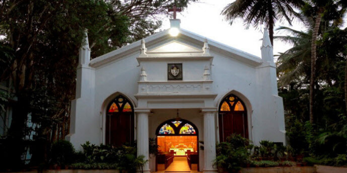
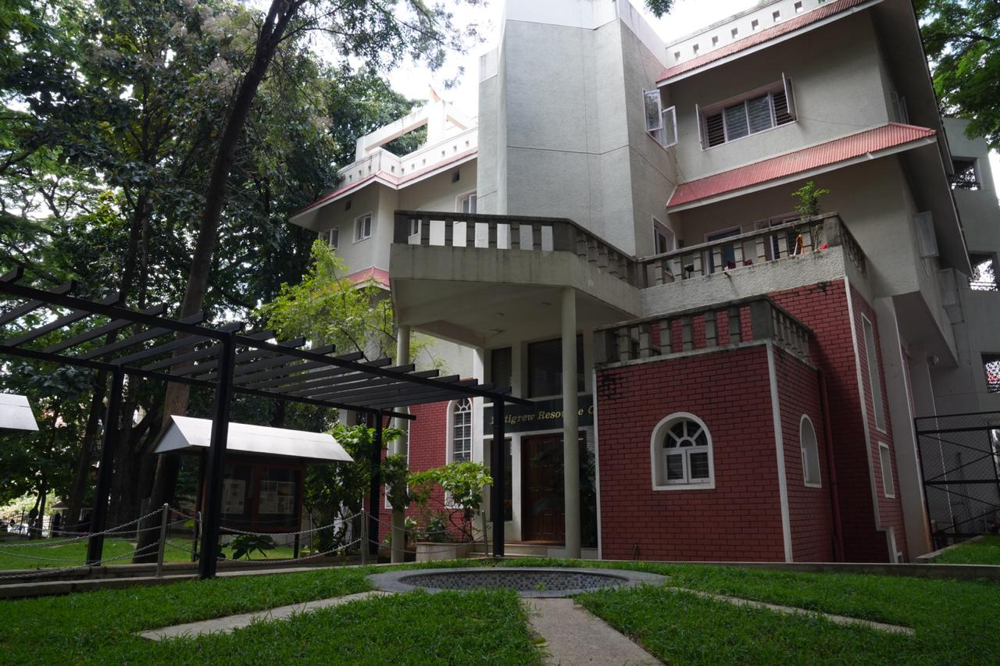

Campus Life

School Church
Was Establised in 1911
St. Peter's Chapel was dedicated in the year 1911 and since then it continues to inspire several hundreds of students who enter the portals of the school.

School Library
Was Establised in 1989
A gateway to knowledge, the school library, “Pettigrew Resource Centre” is truly an invaluable asset to the students and the staff in the teaching-learning process.

Auditorium
Was Establised in 1987
Standing on the erstwhile Third eleven field, is now a state of the art Auditorium The Bishop Edward Lynch Cotton Auditorium. It is fondly referred to as the “Great Cottonian Globe”.


_0.jpg)